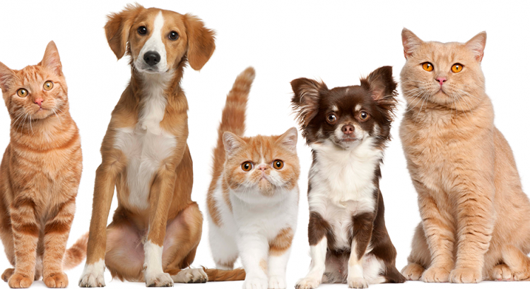

Bem-vindo ao Portal de Adoção PetAdote!
Quem Somos Nós
O PetAdote nasceu em 2018 com um propósito bem claro: salvar vidas e preencher lares
com amor incondicional. Nós resgatamos, reabilitamos e vacinamos animais de rua para
prepará-los para uma adoção totalmente responsável e segura.
Categorias de Animais para Adoção
Atualmente, temos dezenas de animais sob nossa proteção aguardando por uma família. Nossos
abrigos estão divididos em:
- Cães de Médio e Grande Porte (excelentes protetores e companheiros de caminhadas)
- Gatos Adultos e Idosos (animais calmos e perfeitos para apartamentos)
- Filhotes de Cães e Gatos (energia e carinho garantidos, exigem maior supervisão)
- Animais Especiais (pets amputados, cegos ou com doenças crônicas controladas que merecem um lar amoroso)

Guia do Adotante Responsável
Instagram da PetAdote
Baixar Termo de Compromisso